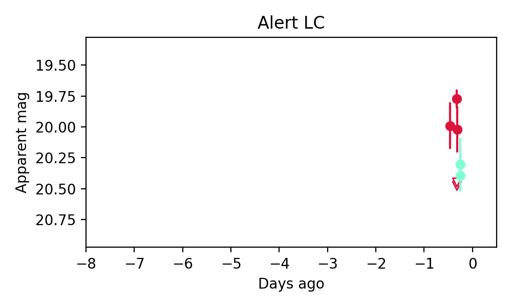
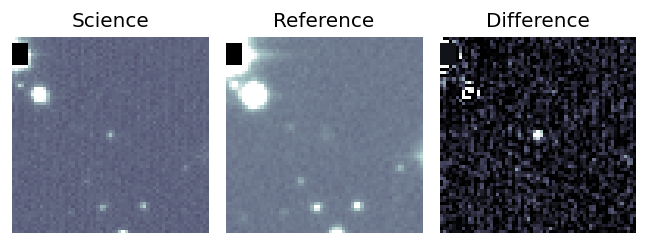
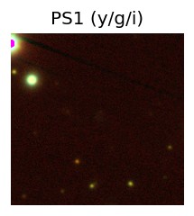
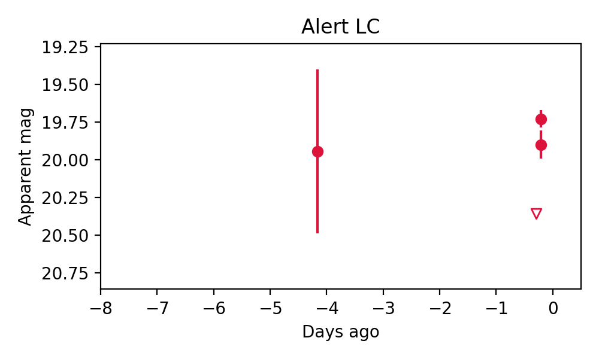

Candidate List 20251124Previous Day Next Day
Section 1: New Sources (age<1d) Section 2: Old (1-5d) sources observed last nightplaceholder
Section 1: New Afterglow/FBOT Cands Last Night (2)
1. ZTF25acekwpd (Afterglow?) [Back to Top] [Share] [Trigger Swift] [Fritz] [Lasair]RA, Dec: 119.64868, 64.13186 7h58m35.68s, 64d 7m54.68sGalactic (l, b): 152.2646, 31.49716 ext(g-r) = 0.055


TESS: Sectors [20 47 60 74]
PS1: 0 sources in 3 arcsec
LegacySurvey: 1 sources in 3 arcsec Closest: d = 4.67 arcsec, 335.3 deg (east of north) photoz=0.07 (68% bounds 0.06, 0.09), type=SER peak abs mag = -17.94 (68% bounds -17.39, -18.31)

Extinction-corrected gr color:
From alerts: 0.49 +/- 0.13 mag
Consistent with synchrotron, g-r>0!
Rise Rate:
g: 0.04 mag/day
r: 0.05 mag/day
i: -99 mag/day
Fade Rate:
g: -99 mag/day
r: 3.39 mag/day
i: -99 mag/day
2. ZTF25acelegg (Afterglow?) [Back to Top] [Share] [Trigger Swift] [Fritz] [Lasair]RA, Dec: 148.23587, 65.68294 9h52m56.61s, 65d40m58.60sGalactic (l, b): 146.05532, 42.5606 ext(g-r) = 0.136

TESS: Sectors [ 14 20 21 40 41 47 74 119 120]
PS1: 0 sources in 3 arcsec
LegacySurvey: 1 sources in 3 arcsec Closest: d = 0.26 arcsec, 257.5 deg (east of north) photoz=0.17 (68% bounds 0.14, 0.19), type=SER peak abs mag = -19.85 (68% bounds -19.39, -20.14)

Extinction-corrected gr color:
From alerts: 0.2 +/- 0.2 mag
Consistent with synchrotron, g-r>0!
Rise Rate:
g: 0.03 mag/day
r: 0.05 mag/day
i: -99 mag/day
Fade Rate:
g: -99 mag/day
r: 26.96 mag/day
i: -99 mag/day
Section 2: Older Sources Observed Last Night (4)
0. ZTF25acegjzm (Afterglow?) [Back to Top] [Share] [Trigger Swift] [Fritz] [Lasair]RA, Dec: 179.56156, -5.4666 11h58m14.77s, -5d-27m-59.77sGalactic (l, b): 279.42928, 54.95949 ext(g-r) = 0.026

TESS: Sectors [ 46 91 115]
PS1: 0 sources in 3 arcsec
LegacySurvey: 1 sources in 3 arcsec Closest: d = 0.50 arcsec, 263.5 deg (east of north) photoz=0.13 (68% bounds 0.1, 0.2), type=EXP peak abs mag = -19.3 (68% bounds -18.67, -20.35)

Rise Rate:
g: 23.37 mag/day
r: -99 mag/day
i: -99 mag/day
Fade Rate:
g: 0.4 mag/day
r: -99 mag/day
i: -99 mag/day
1. ZTF25acegoiv (FBOT?) [Back to Top] [Share] [Trigger Swift] [Fritz] [Lasair]RA, Dec: 184.5579, 49.14134 12h18m13.89s, 49d 8m28.83sGalactic (l, b): 136.96375, 67.07236 ext(g-r) = 0.016

TESS: Sectors [22 48 49 75 76]
PS1: 0 sources in 3 arcsec
LegacySurvey: 1 sources in 3 arcsec Closest: d = 0.50 arcsec, 173.9 deg (east of north) photoz=0.35 (68% bounds 0.15, 0.45), type=REX peak abs mag = -21.95 (68% bounds -19.82, -22.57)

Extinction-corrected gr color:
From alerts: -0.25 +/- 0.21 mag
Rise Rate:
g: 0.21 mag/day
r: 0.12 mag/day
i: -99 mag/day
Fade Rate:
g: -99 mag/day
r: -99 mag/day
i: -99 mag/day
2. ZTF25acejudl (FBOT?) [Back to Top] [Share] [Trigger Swift] [Fritz] [Lasair]RA, Dec: 85.89531, 50.49297 5h43m34.87s, 50d29m34.70sGalactic (l, b): 161.20219, 10.75528 ext(g-r) = 0.274
TESS: Sectors [19 59 73]
PS1: 1 source in 3 arcsec Closest: d = 0.65 arcsec photoz=0.43+/-0.16 peak abs mag = -22.77
LegacySurvey: 0 sources in 3 arcsec

Rise Rate:
g: -99 mag/day
r: 7.42 mag/day
i: -99 mag/day
Fade Rate:
g: -99 mag/day
r: -99 mag/day
i: -99 mag/day
3. ZTF25acelime (FBOT?) [Back to Top] [Share] [Trigger Swift] [Fritz] [Lasair]RA, Dec: 126.8792, 16.8699 8h27m31.01s, 16d52m11.65sGalactic (l, b): 207.66018, 28.62057 WARNING: -2.19 deg from ecliptic plane ext(g-r) = 0.051


TESS: Sectors [44 45 46 71 72]
SDSS (10 arcsec):Found SDSS phot-z: z=0.15; peak abs mag = -19.97
PS1: 0 sources in 3 arcsec
LegacySurvey: 1 sources in 3 arcsec Closest: d = 1.43 arcsec, 313.4 deg (east of north) photoz=0.12 (68% bounds 0.1, 0.15), type=EXP peak abs mag = -19.36 (68% bounds -18.95, -19.89)

Extinction-corrected gr color:
From alerts: -0.37 +/- 0.12 mag
Rise Rate:
g: 0.32 mag/day
r: 0.06 mag/day
i: -99 mag/day
Fade Rate:
g: -99 mag/day
r: -99 mag/day
i: -99 mag/day